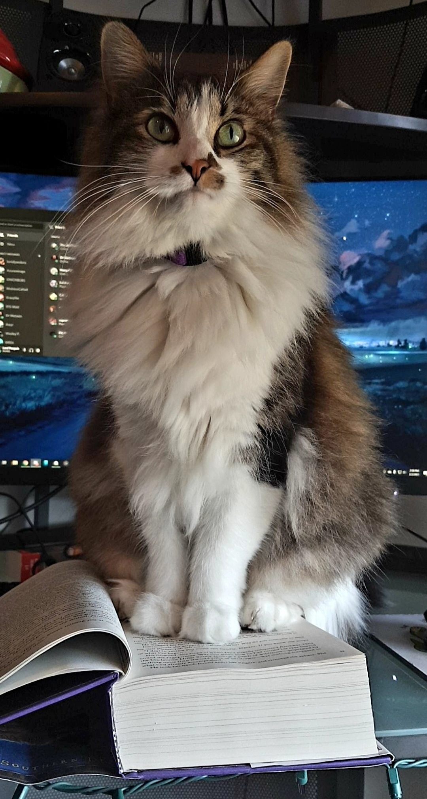

I'm currently at home in Nashville. I'm spending mornings with the fam, making sure the kids get off to school before working out and spending evenings shut in, writing with Bazzi.
Me and Bazzi are currently working on the second book in The Blood Works series. We're about halfway through the first draft so don't expect anything anytime soon. ETA of The Bluelands (clever name I know but we're sticking to a theme here) is October of 2024.